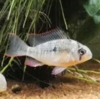

<nav class="navbar navbar-expand-lg navbar-dark bg-primary">
  <a class="navbar-brand font-fancy" href="#">
     AquaMI</a>
  <button class="navbar-toggler" type="button" data-toggle="collapse" data-target="#navbarSupportedContent" aria-controls="navbarSupportedContent"
    aria-expanded="false" aria-label="Toggle navigation">
    <span class="navbar-toggler-icon"></span>
  </button>
  <div class="collapse navbar-collapse" id="navbarSupportedContent">
    <ul class="navbar-nav ml-auto">
      <li class="nav-item">
        <a class="nav-link" routerLinkActive="active" [routerLink]="['/home']">Home</a>
      </li>
      <li class="nav-item">
        <a class="nav-link" routerLinkActive="active" [routerLink]="['/home/test']">Test</a>
      </li>
      <li class="nav-item">
        <a class="nav-link" routerLinkActive="active" [routerLink]="['/home/ferti']">Fertilizzazione</a>
      </li>
      <li class="nav-item">
        <a class="nav-link" routerLinkActive="active" [routerLink]="['/home/manutenzione']">Manutenzione</a>
      </li>
    </ul>
  </div>
</nav>
